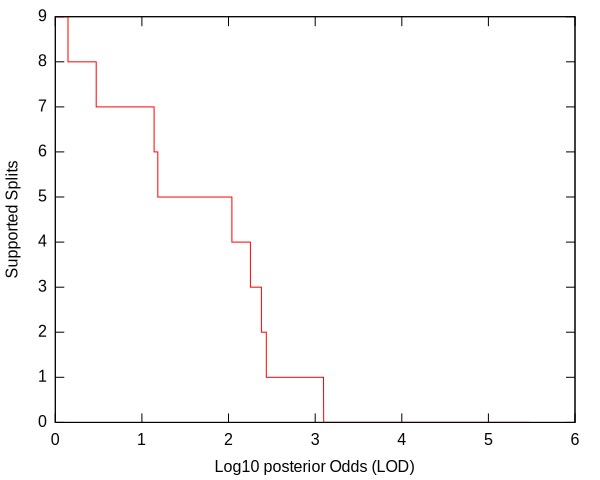
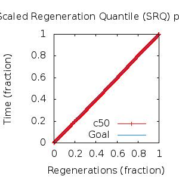
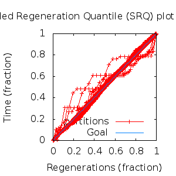

MCMC Post-hoc Analysis: 12 sequences
Data & Model
| Partition | Sequences | Lengths | Alphabet | Substitution Model | Indel Model | Scale Model |
|---|
| 1 |
E5_epsilonzeta_aa.fas |
84 - 96 |
Amino-Acids | S1 = lg08+f |
I1 = rs07 |
scale1 ~ gamma[0.5,2] |
Scalar variables
| Statistic | Median | 95% BCI | ACT | ESS | burnin | PSRF-CI80% | PSRF-RCF |
|---|
| prior |
-95.54 |
(-119.4, -75.79) |
23.08 |
11696 |
176
|
0.9998 | 0.9944
|
| prior_A1 |
-104.8 |
(-125.5, -95.41) |
5.556 |
48592 |
277
|
1 | 0.995
|
| likelihood |
-1297 |
(-1311, -1282) |
6.429 |
41997 |
173
|
0.9997 | 0.9982
|
| posterior |
-1393 |
(-1413, -1374) |
35.1 |
7692 |
228
|
1 | 0.9973
|
| Heat.beta |
1 |
| | | | | |
| Scale[1] |
2.53 |
(1.317, 4.316) |
1.079 |
250327 |
133
|
0.9999 | 1.001
|
| f:pi[A] |
0.05203 |
(0.02975, 0.07746) |
7.73 |
34929 |
417
|
1 | 1.004
|
| f:pi[R] |
0.09101 |
(0.05861, 0.1262) |
7.707 |
35032 |
504
|
1 | 1
|
| f:pi[N] |
0.02462 |
(0.009121, 0.04388) |
8.321 |
32449 |
429
|
1 | 1.001
|
| f:pi[D] |
0.003519 |
(2.917e-07, 0.01503) |
12.51 |
21579 |
644
|
0.9995 | 0.9962
|
| f:pi[C] |
0.05415 |
(0.03116, 0.08026) |
7.677 |
35171 |
191
|
1 | 0.9894
|
| f:pi[Q] |
0.04074 |
(0.02192, 0.06293) |
7.765 |
34772 |
445
|
1 | 0.9974
|
| f:pi[E] |
0.01143 |
(0.001281, 0.0271) |
8.942 |
30194 |
520
|
0.9991 | 1.002
|
| f:pi[G] |
0.03592 |
(0.01432, 0.0631) |
8.193 |
32955 |
461
|
1 | 0.999
|
| f:pi[H] |
0.03704 |
(0.01836, 0.05922) |
7.666 |
35219 |
510
|
1.001 | 1.003
|
| f:pi[I] |
0.02849 |
(0.01509, 0.04426) |
8.193 |
32956 |
450
|
0.9999 | 1.006
|
| f:pi[L] |
0.2012 |
(0.1583, 0.2458) |
7.134 |
37848 |
261
|
0.9999 | 1.002
|
| f:pi[K] |
0.03415 |
(0.01659, 0.05488) |
7.76 |
34794 |
365
|
0.9997 | 1.004
|
| f:pi[M] |
0.01964 |
(0.00904, 0.03219) |
8.137 |
33183 |
310
|
1 | 1.002
|
| f:pi[F] |
0.08272 |
(0.05451, 0.1153) |
7.655 |
35271 |
418
|
1 | 1.002
|
| f:pi[P] |
0.04605 |
(0.02107, 0.07655) |
7.748 |
34846 |
242
|
1 | 1
|
| f:pi[S] |
0.04775 |
(0.02688, 0.07301) |
7.695 |
35087 |
430
|
1 | 0.9985
|
| f:pi[T] |
0.04736 |
(0.02713, 0.07103) |
7.723 |
34959 |
463
|
0.9999 | 0.9992
|
| f:pi[W] |
0.02705 |
(0.01078, 0.04776) |
8.009 |
33712 |
535
|
1 | 0.9988
|
| f:pi[Y] |
0.02047 |
(0.00863, 0.03539) |
7.78 |
34703 |
481
|
0.9998 | 1.002
|
| f:pi[V] |
0.07534 |
(0.051, 0.1023) |
7.329 |
36838 |
204
|
0.9997 | 0.9993
|
| rs07:mean_length |
2.767 |
(1.723, 4.358) |
2.321 |
116341 |
249
|
1 | 0.9994
|
| rs07:log_rate |
-3.723 |
(-4.288, -3.115) |
2.194 |
123058 |
164
|
1 | 0.9978
|
| |A1| |
114 |
(112, 117) |
19.14 |
14107 |
364 |
0.6667 | 0.9965
|
| #indels1 |
12 |
(11, 16) |
6.292 |
42911 |
141 |
0.75 | 0.9956
|
| |indels1| |
34 |
(30, 39) |
3.41 |
79172 |
153 |
0.8 | 0.9994
|
| #substs1 |
198 |
(193, 202) |
11.51 |
23451 |
180 |
0.8 | 0.9943
|
| Scale1*|T| |
2.653 |
(2.257, 3.068) |
2.01 |
134359 |
175
|
1 | 0.9997
|
| |A| |
114 |
(112, 117) |
19.14 |
14107 |
364 |
0.6667 | 0.9965
|
| #indels |
12 |
(11, 16) |
6.292 |
42911 |
141 |
0.75 | 0.9956
|
| |indels| |
34 |
(30, 39) |
3.41 |
79172 |
153 |
0.8 | 0.9994
|
| #substs |
198 |
(193, 202) |
11.51 |
23451 |
180 |
0.8 | 0.9943
|
| |T| |
1.049 |
(0.5342, 1.693) |
1 |
270003 |
111
|
1 | 1
|
Phylogeny Distribution


Alignment Distribution
Partition 1
|
|
|
Diff |
|
Min. %identity |
# Sites |
Constant |
Informative |
| Initial |
FASTA |
HTML |
Diff |
|
26% |
96 |
16 (16.7%) |
64 (66.7%) |
| Best (WPD) |
FASTA |
HTML |
|
AU |
37.3% |
113 |
20 (17.7%) |
47 (41.6%) |
Mixing
Statistics: | scalar burnin | 644 | | scalar ESS | 7692 | | topological ESS | | | ASDSF | NA | | MSDSF | NA | | PSRF CI80% | 1.001 | | PSRF RCF | 1.006 |
|  |
Analysis
directory: /work/awillemsen/bali-phy/AlphaPVs_E5_aa_new
version: 3.3
| chain # | burnin | subsample | Iterations (after burnin) | command line | subdirectory |
|---|
| 1 |
10000 |
1 |
90000 |
bali-phy E5_epsilonzeta_aa.fas -s 89213 -i 100000 -n AlphaPVs_E5_epsilonzeta |
AlphaPVs_E5_epsilonzeta-1 |
| 2 |
10000 |
1 |
90000 |
bali-phy E5_epsilonzeta_aa.fas -s 84358 -i 100000 -n AlphaPVs_E5_epsilonzeta |
AlphaPVs_E5_epsilonzeta-2 |
| 3 |
10000 |
1 |
90000 |
bali-phy E5_epsilonzeta_aa.fas -s 79234 -i 100000 -n AlphaPVs_E5_epsilonzeta |
AlphaPVs_E5_epsilonzeta-3 |
| P(data|M) = -1310.695 +- 0.248
|
Complete sample: 476
topologies |
95% Bayesian credible interval: 57 topologies |
Model and priors
Tree (+priors)
| topology | ~ uniform on tree topologies |
| branch lengths | ~ iid[num_branches[T],gamma[0.5,div[2,num_branches[T]]]] |
Substitution model (+priors)
| S1 | = |
lg08+f
| f:pi | ~ | dirichlet_on[letters[@a],1]
|
|
Indel model (+priors)
| I1 | = |
rs07
| rs07:log_rate | ~ | laplace[-4,0.707]
|
| rs07:mean_length | ~ | exponential[10,1]
|
|
Scales (+priors)
{kind=link}
{kind=link}
{kind=link}
{kind=link}
{kind=link}
{kind=link}
{kind=link}
{kind=link}